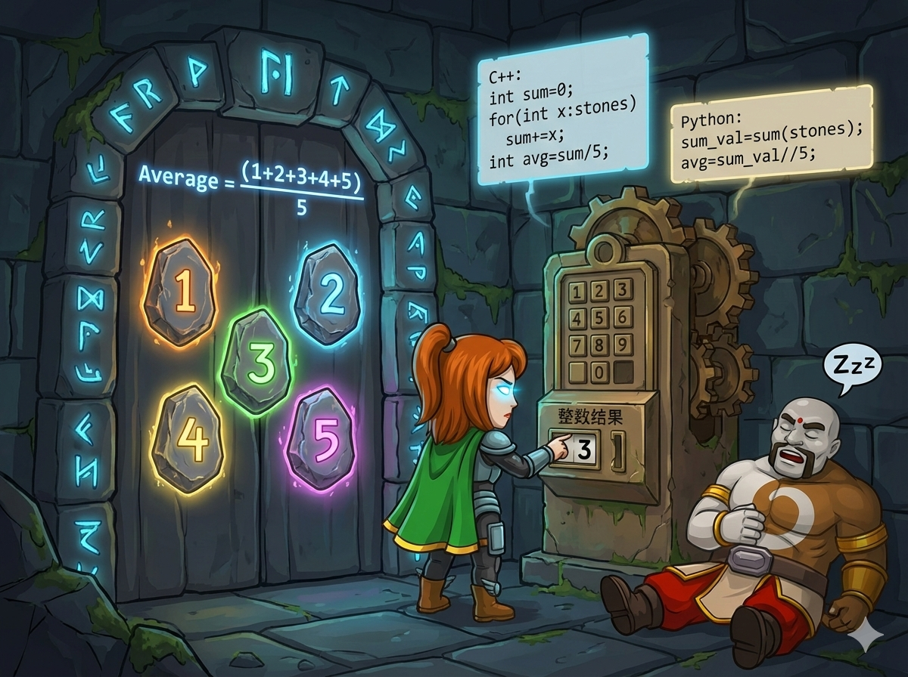

英雄站在地牢的入口，面前有 5 块能量石，每块石头上都刻着一个能量值。
石门上刻着开启规则：
“汇聚五石之力，求其均衡之数。”
意思就是：
1. 把 5 块石头的能量加起来 (求和)。
2. 把总能量除以 5 (求平均)。
3. 结果只保留 整数 部分 (去掉小数)。
👉 任务： 读入 5 个整数，计算并输出它们的整数平均值。
这道题是统计学最基础的魔法：平均值 (Mean)。
在 C++ 中，如果两个整数相除（例如 int / int），结果会自动丢弃小数部分。
比如：14 / 5 的结果是 2 (而不是 2.8)。
这正好符合题目要求！
Python 的普通除法 / 会得到小数（float）。
要得到整数，必须用 双斜杠 //。
比如：14 // 5 的结果是 2。
循环累加，最后整除。
#include <iostream> using namespace std; int main() { // 1. 定义数组，存放5个能量石 int a[5]; int sum = 0; // 累加器，用来存总和 // 2. 循环读入并累加 for (int i = 0; i < 5; i++) { cin >> a[i]; sum += a[i]; // 读一个加一个 } // 3. 计算并输出平均值 // 整数除以整数，结果自动是整数 cout << sum / 5 << endl; return 0; }
使用 sum() 函数和地板除，代码超简洁。
# 1. 读入一行，变成整数列表 # input().split() 按空格切分 # map(int, ...) 转成整数 a = list(map(int, input().split())) # 2. 求总和 total = sum(a) # 3. 求整数平均值 (注意用 // ) avg = total // 5 # 4. 输出 print(avg)